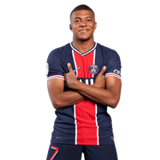

Kylian Mbappé Lottin (born 20 December 1998) is a French professional footballer who plays as a forward for Ligue 1 club Paris Saint-Germain and the France national team.
Mbappé began his senior career with Ligue 1 club Monaco, making his professional debut in 2015, aged 16. With them, he won a Ligue 1 title, Ligue 1 Young Player of the Year, and the Golden Boy award. In 2017, he signed for league rivals Paris Saint-Germain on an initial loan, which was made permanent in 2018 in a transfer worth €180 million, making him both the second-most expensive player and most expensive teenager.[4] There, Mbappé won three Ligue 1 titles, three Coupe de France titles, was named Ligue 1 Player of the Year twice, and has finished as Ligue 1 top scorer for three consecutive times. He is also the third-highest goalscorer in the club's history.
At international level, Mbappé made his senior debut for France in 2017, at age 18. At the 2018 FIFA World Cup, Mbappé became the youngest French player to score at a World Cup, and became the second teenager, after Pelé, to score in a World Cup Final. He finished as the joint second-highest goalscorer as France won the tournament, and he received the Best Young Player and French Player of the Year awards for his performances.
Mbappé began his senior career with Ligue 1 club Monaco, making his professional debut in 2015, aged 16. With them, he won a Ligue 1 title, Ligue 1 Young Player of the Year, and the Golden Boy award. In 2017, he signed for league rivals Paris Saint-Germain on an initial loan, which was made permanent in 2018 in a transfer worth €180 million, making him both the second-most expensive player and most expensive teenager.[4] There, Mbappé won three Ligue 1 titles, three Coupe de France titles, was named Ligue 1 Player of the Year twice, and has finished as Ligue 1 top scorer for three consecutive times. He is also the third-highest goalscorer in the club's history.
